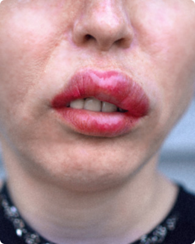
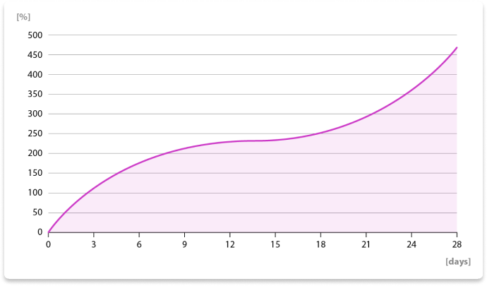
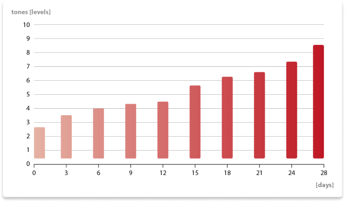
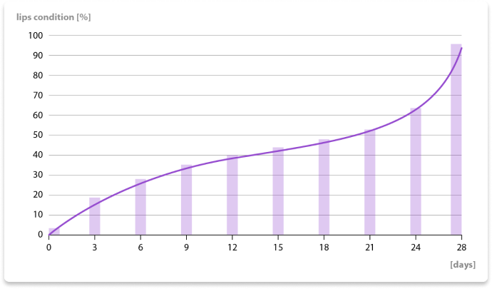
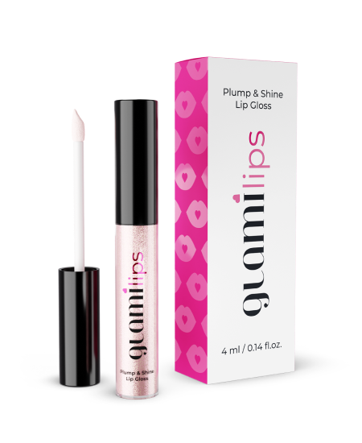

„UAU! Buze ca de vis!”
În 28 de zile îți recuperezi buze pline și definite – ca după injecțiile cu agenți de umplutură, însă... 100% natural:
- buze de 4 ori mai mari
- fără ace, durere și artificialitate
- pentru câteva % din prețul injecțiilor
Bună, Dragă!
Mă numesc prof. Ana Bunea-Meyer și de 20 de ani mă ocup de cosmetologie. Mă bucur că ești aici, pentru că mulțumită acesteia deja în curând te vei privi în oglindă și vei vedea o femei frumoasă cu buze pline și senzuale.
Astăzi îți prezint metoda de 28 de zile descoperită de mine pentru mărirea naturală a buzelor. Mulțumită acesteia vei încânta cu aspectul lor – și asta chiar fără machiaj. Vei uita de gândurile că vei cheltui un munte de bani pe injecțiile cu agenți de umplere sau pe machiajul permanent al buzelor.
Sună minunat, așa-i? Cel mai bun este faptul că acest efect îl ai absolut garantat. Aceasta este dovedită științific cu cercetări clinice, prin participarea a 30 000 de femei și confirmată de peste 60 000 de Cliente satisfăcute.
Deja peste 28 zile vei uita pentru totdeauna de:
- buze mici, subțiri, lipsite de simetrie și palide
- luarea în vedere a injecțiilor cu agenți de umplere sau a machiajului permanent al buzelor
- necesitatea măririi buzelor cu machiajul tradițional: creioane de buze și rujuri
Obții buzele mari, pline și evidențiate natural, la care visai! Și mulțumită acesteia:
- scapi de complexe, iar pe lângă acestea vei fi inundată zilnic de complimente
- economisești mulți bani, pe care i-ai fi cheltuit pe tratamentele pentru mărirea buzelor
- vei arăta și te vei simți frumoasă – chiar și fără machierea buzelor
Metoda naturală pentru mărirea buzelor, este descoperirea făcută de mine a bioactivatorului buzelor roșii. Mulțumită acestuia, chiar și femeile care înainte aveau buzele atât de subțiri și palide, încât erau aproape invizibile, în 28 de zile au obținut niște buze mari, pline și fermecătoare.
Da, acest lucru este în sfârșit posibil! Acest lucru este confirmat de cazul doamnei Ioana din Craiova, care încă acum câteva luni suferea din cauza complexelor referitoare la aspectul buzelor.
Ioana Barbu
37 de ani, Mizil
5/5„Oamenii credeau că sunt a dracu”
Buzele mele erau atât de subțiri, încât arătam de parcă mă scremeam într-una. Din cauza asta oamenii credeau că sunt a dracu, mereu supărată și ofensată. Aceste opinii mă dureau. Speranța mi-a redat-o preparatul doamnei prof. Bunea-Meyer.
Am fost șocată. Buzele mele PUR ȘI SIMPLU AU ÎNFLORIT. Literalmente mi-a amintit de faptul, cum dintr-un boboc mic, s-a dezvoltat o floare mare și plină. Deja după prima săptămână am alergat la magazin după ruj, pentru că în sfârșit aveam ce să-mi machiez. După 2 săptămâni buzele mele au devenit de 3 ori mai mari. Acum nici măcar nu mai folosesc acel ruj, pentru că buzele sunt roșii, mari și... pur și simplu tentante. Sunt foarte fericită! Este o mare plăcere să vezi, cum bărbații se uită după mine pe stradă…
Aceasta este prima metodă pentru mărirea buzelor, care este naturală
Indiferent de cât de mici, subțiri sau palide sunt acum buzele tale – în 28 de zile vei trece prin metamorfoza spectaculoasă și obții aspectul frumos, la care visezi. Iată cercetările confirmate ale efectelor, pe care le asigură bioactivatorul buzelor roșii:
- efectul imediat „glow” – formula conține particule care reflectă lumina (ceea ce vizual le mărește), mulțumită acesteia buzele obțin un aspect tentant și apetisant
- amplificarea culorii roșii a buzelor deja după 10 secunde de la prima utilizare – mulțumită acesteia, buzele devin într-un moment vizibil cu 20% mai mari și mult mai clare
- volum de 4 ori mai mare al buzelor după 28 de zile – mulțumită acesteia buzele obțin un aspect precum cel de după umplerea cu agenți de umplere (dar fără injecții și costurile îngrozitoare legate de acestea, artificialitate, durere și nici risc)
- aprofundarea culorii buzelor – buzele devin și mai evidențiate mulțumită faptului, că au o culoare mai intensivă
- regenerare profundă, hrănire și hidratare – buzele devin moi și netede
- îndepărtarea ridurilor de deasupra buzei superioare – ridurile orizontale (ridurile fumătorului) devin considerabil mai puțin vizibile, ceea ce întinerește aspectul feței
Bioactivatorul culorii roșii a buzelor nu doar că mărește buzle, dar le și aprofundează culoare
Înainte…
După 28 zile
De ce am decis să descopăr „preparatul făcător de minuni pentru mărirea buzelor”?
Adevărul este că buzele sunt un element cheie al frumuseții femeiești. Acordă caracter feței, subliniază frumusețea și chiar întineresc aspectul. Buzele pline și senzuale atrag bărbații și fac ca privitul în oglindă, să devină o plăcere.
Buzele pline sunt atributul fiecărei dintre noi:
- sunt văzute ca un simbol al feminității
- subliniază frumusețea și îi adaugă atractivitate
- întineresc aspectul chiar și cu câțiva ani
Tocmai de aceea buzele accentuate sunt atât de importante, pentru a te putea simți frumoasă, atrăgătoare și o femeie îngrijită.
Buzele subțiri pot fi chinul, chiar și al femeilor frumoase
Buzele strânse sunt exprimarea supărării, furiei și antipatiei. Mărturisesc o atitudine ostilă. Dacă ai buze mici, arăți de parcă te-ai creme mereu. Din cauza asta ești văzută pe nedrept, ca neprietenoasă și rea. Este foarte nedrept! Dacă este prea puțin, femeile cu buze subțiri sunt văzute ca mai puțin atrăgătoare. Probabil chiar te gândești așa despre tine...
Dacă buzele tale sunt mari și pline, emani frumusețe și senzualitate. Te simți frumoasă, iar pe lângă acestea ești văzută ca atrăgătoare și ești plăcută de oameni – și cu siguranță devii dorită de bărbați.
Din păcate, pe multe femei natura nu le-a înzestrat cu buze pline, iar din cauza asta zilnic se luptă cu complexe. Încă acum un an, aparțineam de acest grup. Buzele mele erau subțiri și palide. Arătam ca o mâhnită și mult mai bătrână, decât sunt în realitate. O cunoștiință mi-a recomandat injectarea acidului pentru mărirea buzelor, asigurând că este o operație foarte confortabilă. De aceea am decis să merg la cosmetician pentru această intervenție și atunci…
Am fost la un pas de tragedie…
Din păcate, când te duci la salonul pentru mărirea buzelor, nimeni nu îți spune, că te amenință paralizia facială. Am experimentat acest lucru pe propria piele, chiar dacă am ales cel mai scump salon de înfrumusețare.
Doar când am văzut acel ac mare de-asupra feței mele, am început să presimt, că vor fi probleme cu asta. Injecțiile dureau îngrozitor, după care din găurile lăsate de acestea curgea sânge... Buzele mele erau roșii și umflate. Credeam că nu voi rezista acestei gheene.
S-a demonstrat că cosmeticianul nu a folosit acidul original, ci o făcătură toxică chinezească, care nu a fost cercetată. Acea femeie nici măcar nu era conștientă, pentru că firma de distribuție a fost cea care a comis frauda.
Injecțiile cu acid mi-au paralizat fața!
Rezultatul reacției alergice a fost că mușchii din buzele mele au fost practic paralizați. Am pierdut simțul din mușchi! Trebuia să trec printr-un tratament și o recuperare îndelungată, pentru a reveni la sănătate. Dacă nu aș fi reacționat la timp, astăzi nu mai puteam mânca normal, să vorbesc sau să zâmbesc.
De ce s-a nimerit tocmai la mine? Asta nu știu. Însă norocul ghinionului este, că această experiență traumatică m-a motivat să descopăr metoda naturală și sigură pentru mărirea buzelor. Am făcut asta pentru mine – și acum mă împart cu fructul muncii mele grele cu toate femeile, care vor să fie frumoase natural.
Te gândești la injecțiile pentru mărirea buzelor? Gândește-te de 5 ori
Experiența mea cu modelarea buzelor este deosebit de ghinionistă și drastică. Dar riscul reacțiilor alergice nu este singurul dezavantaj al acestor tratamente. Lista efectelor adverse este cu mult mai lungă…
-
1. Riscul edemelor și a vânătăilor
Imediat după intervenție apar edeme și vânătăi în zona în care au fost făcute injecțiile – și nu se știe niciodată, când dispar. Poate fi după 1 zi, sau după 1 săptămână. Apar de asemenea, niște cruste oribile. Într-o asemenea stare, cu rușine ieși din casă. -
2. Pe buze pot apărea inegalități, cruste sau noduli
Acest lucru poate fi provocat de distribuția incorectă a agentului de umplere sau de reacția organismului. Atunci buzele sunt inestetice și arată pur și simplu rău. -
3. Efectul „algoidului” garantat în peste 70% din intervenții
În multe cazuri, efectul este prea mare și nenatural. Buzele au un aspect artificial „umflat”. Sunt nefiresc de mari și înclinate. -
4. Pierderea simțului
În foarte multe cazuri apare pierderea simțului în zona buzelor. Mâncatul și vorbitul devin greoaie. -
5. Infecții
Intervine riscul infecțiilor în locul administrării agentului de umplere. Organismul se apără împotriva substanțelor străine și reacționează prin inflamații. -
6. Efect de scurtă durată
Umplerea ține doar pentru aproximativ 6 luni. După această perioadă este necesară repetarea injectării cu o doză mai mare de umplere. Buzele arată din ce în ce mai artificial, iar fața se transformă încet într-o mască din plastic. -
7. Costuri îngrozitoare
O mărire a buzelor cu acid este până la 1500 lei. Este o cale sigură spre faliment!
De ce să riști așa și suplimentar să mai plătești enorm?
De ce să arăți așa...
Dacă poți arăta așa! ❤️
Acum este moda pentru naturalețe
Cercetările sociologice de la Universitatea Danvare arată clar că până la 79% dintre oameni (inclusiv 86% bărbați) consideră că buzele mărite artificial sunt neatractive. Mai mult, acum stăpânește moda pentru stilul de viață și aspectul natural, din ce în ce mai multe persoane spunând, că detestă buzle „pompate”. Femeile care și-au supus buzele unei asemenea stări, sunt denumite „algoide”.
Cred că nu mai trebuie să explic nimănui, că este mai bine să avem grijă de aspectul nostru într-un mod natural, decât să ne desfigurăm decizându-ne la artificialitate. Este logic, că cea mai bună soluție este bioactivatorul buzelor roșii natural.
Producătorii agenților de umplere artificiali pentru buze chiar acum sunt furioși, pentru că afacerile lor slăbesc
Nu mă miră. Doar din facerea buzelor artificiale pentru femei câștigă o grămadă de bani. Însă trebuie să realizeze, că înfrumusețează frumusețea femeilor doar aparent. Însă cu adevărat, le fac chiar rău, expunându-le nu doar la un aspect de caricatură, dar și la complicații de sănătate serioase.
Sănătatea este mai importantă decât sănătatea. Dar acum nu mai trebuie să alegi între sănătate și frumusețe. Ai modul, care îți garantează buze de 4 ori mai mari – chiar mai frumoase, pentru că este 100% natural!
Irina Strună,
29 de ani, Ploiești
5/5„Nu trebuie deloc să mă machiez. Ce alinare!!!”
Poate sună ciudat, dar nu îmi suportam buzele. De aceea le măream zilnic cu grijă prin conturare și cu ruj. Chiar și la magazin după chifle mergeam machiată. Fără asta nu mă lipseam împlinită și aveam obsesia, că oamenii privind la mine cred că sunt urâtă. Nici măcar nu am observat, cât de amuzant arată. Doar se observa cu ochiul liber, că buzele mele erau machiate excesiv...
Mai târziu, după 2 săptămâni de folosire a acestui preparat, am buzele de o sută de ori mai frumoase decât după aplicarea rujului, iar pe lângă acestea natural și foarte mari! Economisesc mult timp, pentru că nu trebuie să mai machiez sau să mă demachiez. Iar la întâlniri sunt sigură pe mine, ca niciodată până acum. Pur și simplu senzațional!
Nu mai trebuie să fiu sclava creioanelor și rujurilor
Gândește-te cât de minunat va fi să îți iei adio pentru totdeauna de la machiajul destinat buzelor. Gata cu machierea și spălarea continuă. Nicio usturime și iritație după demachiere. Începutul libertății: arăți frumos și fermecător – mereu, nu doar atunci când ai buzele machiate.
De ce să te enervezi din cauza asta...?
Dacă poți avea asta!
Cristina Stoia,
29 de ani, Brașov
5/5„Străinii îmi fac complimente!”
Mereu aveam o grămadă de complexe, iar prietenul meu se holba pe Instagram după fete cu buze mari. În final mi-a spus că îmi dă bani, pentru a-mi injecta silicon. M-am înfuriat. Cum adică? Să am o gură ca un cur de babuin? După scandalul ăsta, m-a lăsat. O săptămână nu am ieșit din casă. Plângeam într-una. Mai târziu prietena mea mi-a găsit această minune. Mi-a spus: „Cristina, dă-te cu asta și o să-i arăți!”. Și avea dreptate, nu? Ei, și am aplicat asta. Zilnic.
Și vă dau cuvântul, că după câteva zile aveam buzele de 2 ori mai mari. Au trecut 3 săptămâni și... am buze mari, roșii și frumoase. Sunt atât de naturale, ca și cum m-aș fi născut cu ele așa. Acum arăt atât de bine, că și străinii mă agață și îmi fac complimente. Și celălat voia să se întoarcă a mine, dar n-am fost de acord.
Cum funcționează?
Pentru a înțelege bine, de ce bioactivatorul natural pentru buzele roșii este o metodă mai bună pentru mărirea buzelor, decât modelarea artificială cu injectări – privește, din ce sunt construite buzele:
Celulele epiteliale
Reprezintă stratul superior al pielii de pe suprafața exterioară a buzelor. Epiteliul îndeplinește funcția de protecție, izolând țesuturile sensibile de dedesubt. Acesta este stratul superior al pielii de pe suprafața exterioară a buzelor. Epiteliul îndeplinește funcția de protecție, izolând țesuturile sensibile de dedesubt.
Celulele țesutul conjunctiv
Țesutul conjunctiv, care conține diferite tipuri de celule, printre acestea fibroblaste, care sunt angajate în producția proteinelor structurale (cele precum colagenul) care le acordă țesuturilor volum, elasticitate și rezistență.
Vasele de sânge
Furnizează oxigen și nutrienți celulelor buzelor. Acestea sunt de asemenea angajate în termolegurare.
Celulele musculare
Permit mișcarea buzelor, ceea ce este important în perioada vorbitului, mâncatului și exprimării emoțiilor.
Celulele nervoase
Transmit semnalele senzoriale și controlează mișcarea mușchilor, făcând posibile diferite funcții, cele precum simțul, vorbitul sau zâmbitul.
Când te decizi la injecțiile pentru mărirea buzelor, injectezi în acestea aditiv artificial. Acest aditiv artificial se poate răspândi sub piele și să provoace asimetria feței. Iar cel mai rău – acesta paralizează celulele musculare și nervoase ale buzelor. Efectul? Buze artificiale ca niște bărci, iar pe lângă acestea pareză lipomusculară. Arăți artificial și nu poți să zâmbești și nici să vorbești liber.
Pe când, dacă folosești bioactivatorul buzelor roșii – buzele tale se măresc natura. Acesta nu paralizează celulele musculare și nervoase, ci acționează asupra celulelor țesutului conjunctiv din buze și asupra fibroblastelor. Mulțumită acesteia, structurile de colagen din buze se măresc – oferin efectul natural al buzelor mari, pline și îngrijite. Mai mult, bioactivatorul buzelor roșii hrănește suprafața buzelor, mulțumită acesteia devenind regenerate ideal: moi, netede și ferme.
Mădălina Enache,
43 de ani, Oradea
5/5„Acest lucru este pur și simplu GENIAL!”
Este o prostie, că poți avea complexe din cauza buzelor? Eu am. Adică nu! Stai! AVEAM. Totul s-a schimbat când am trecut prin acest tratament cu bioactivator. Desigur acesta a fost nu știu al câtelea preparat la rând. Și deși celelalte funcționau puțin, efectul a fost de cel mult 1 oră.
Aici efectele au fost bune de la început. M-am bucurat mult, dar mă temeam că prea repede, sau că va trebui să folosesc până la sfârșitul vieții. Însă nu s-a întâmplat asta. A trecut o săptămână – buzele în continuare pline. A trecut a doua săptămână – buzele în continuare roșii și mari. Eram pozitiv uimită. A trecut o lună și NIMIC! Buzele sunt atât de apetisante, sărutabile și cu o culoare roșie naturală. GENIAL!
Acum înțelegi deja, că bioactivatorul culorii roșii natural funcționează profund și complex:
- efectul imediat „glow” – formula conține particule care reflectă lumina (ceea ce vizual le mărește), mulțumită acesteia buzele obțin un aspect tentant și apetisant
- amplificarea culorii roșii a buzelor deja după 10 secunde de la prima utilizare – mulțumită acesteia, buzele devin într-un moment vizibil cu 20% mai mari și mult mai clare
- volum de 4 ori mai mare al buzelor după 28 de zile – mulțumită acesteia buzele obțin un aspect precum cel de după umplerea cu agenți de umplere (dar fără injecții și costurile îngrozitoare legate de acestea, artificialitate, durere și nici risc)
- aprofundarea culorii buzelor – buzele devin și mai evidențiate mulțumită faptului, că au o culoare mai intensivă
- regenerare profundă, hrănire și hidratare – buzele devin moi și netede
- îndepărtarea ridurilor de deasupra buzei superioare – ridurile orizontale (ridurile fumătorului) devin considerabil mai puțin vizibile, ceea ce întinerește aspectul feței
Lucia Amariei,
37 de ani, Timișoara
5/5„1500 de lei anual îmi rămân în buzunar, pentru că nu mai trebuie să merg la cosmetician.”
De 4 ani mergem la tratamentul pentru mărirea și modelarea buzelor. Într-un fel frumos, dar minim la jumătate de an trebuia să repet asta, și nu sunt lucruri ieftine. Așa că atunci când situația mea financiară s-a înrăutățit și am început să calculez fiecare bănuț, nu mai puteam profita de acest tratament.
Din păcate, când agentul de umplere a fost absorbit, s-a demonstrat că buzele mele se făceau mai mici decât erau înainte. Suplimentar, a scăzut întinderea pielii din jurul buzelor și mi-au ieșit niște riduri îngrozitoare. Arătam, ca și cum aș fuma un pachet de țigări zilnic. Și n-am fumat deloc în viața mea!
Odată în autobuz, m-am uitat la ceva pe telefon și mi-a sărit în ochi articolul despre acest bioactivator al buzelor roșii. Am citit și am considerat că n-am ce să mai aștept. Am ieșit din autobuz și încă din stație am comandat.
Și acum este și mai bine! După 28 de zile buzele mele – important ALE MELE – sunt minunate. Prietenele cred că în continuare le măresc cu silicon și am auzit, că vorbesc pe la spate, că cică nu am bani, dar la mărirea buzelor umblu. Să vorbească. Eu le știu pe ale mele!
Eficiență dovedită științific


7 laboratoare independente din întreaga lume au analizat bioactivatorul buzelor roșii din punctul de vedere al eficienței, siguranței și calității. Toate testele au fost trecute cu brio, iar eu pentru realizările mele am obținut o serie de premii, dar înainte de toate Best Cosmetological Discovery of the Year. În industria cosmetologică acest premiu este la fel de prestigios precum Premiul Nobel.
Mai jos poți viziona graficele cercetărilor clinice:
MĂRIMEA BUZELOR
Rezultatul după 28 de zile: în medie, buze cu 400% mai mari
CULOARE BUZELOR
Rezultatul după 28 de zile: intensitatea culorii buzelor mărită în medie cu 5 tonuri
REGENERAREA BUZELOR
Rezultatul după 28 de zile: buzele sunt de cel puțin 6 ori mai ferme, hidratate și hrănite
Ai garanția de 100%, că tratamentul cu bioactivatorul buzelor roșii este:
SIMPLU
Nu trebuie să faci efort, să ai abilități speciale sau să citești instrucțiuni complicate. Pentru a obține buze seducător de pline, trebuie doar de câteva ori zilnic (de la 3 la 7 ori) să aplici bioactivatorul buzelor roșii pe buze. Se utilizează atât de ușor, precum un luciu de buze.
EFICIENT
Bioactivatorul buzelor roșii garantează efecte de 10 ori mai bune decât mărirea artificială a buzelor. Asta deoarece este singurul și primul preparat din lume, care inițiază înmulțirea structurilor de colagen din pielea buzelor. Și asta influențează: buze mari, pline și îngrijite – chiar dacă mai devreme erau subțiri și palide. 100% din Utilizatoare conformă acest efect: buze de 4 ori mai mari deja după 28 de zile!
SIGUR
Bioactivatorul buzelor roșii este o formulă 100% naturală. Nu conține substanțe periculoase, care ar putea irita pielea. Asta este foarte important. Mulțumită acesteia poți dormi liniștită, deoarece nu plătești pentru frumusețea ta cu sănătate.
Elena Curcă,
35 de ani, Rădăuți
5/5„Regret, că am ezitat cu comanda”
Este MINUNAT! Nu-mi pot crede propriilor ochi, când mă privesc în oglindă. Am buze literalmente ca din vise. Cu le au toate actrițele și celebritățile, care își fac buzele. Doar că ele le au mărite artificial.
Acest tratament este o minune. Aici nu ai la ce să te gândești. Eu am văzut pe o pagină o fată, care își arăta pozele sale înainte de utilizare și după 4 săptămâni. M-am gândit atunci că este probabil photoshop. Am așteptat o săptămână, două. Însă nu puteam trăi cu asta. Într-o noapte, când dormeam, mă gândeam: „Ei bine, încerc asta...” și am comandat.
Am regretat că am așteptat aceste două săptămâni. De aceea când povestesc cuiva și îi arăt pozele mele înainte și după, avertizez cu loialitate să nu aștepte, ci să cumpere. Colegele mele din fericire nu sunt niște încăpățânate, ca mine. Și-au comandat repede și de asemenea sunt încântate de efecte. Buze ca de fotomodel!
Efect uimitor deja de la prima utilizare
Utilizare ușoară
Acțiune complexă (mărime, culoare, îngrijire)
Metodă 100% naturală și sigură
Eficiență confirmată științific
Ambalaj eficient
Dăruiește-ți frumusețea, pe care o meriți – și profită între timp de o super promoție!
Preparatul cu bioactivatorul buzelor roșii l-am denumit Glamilips și chiar mâine îl poți avea acasă. Și dacă îți plac promoțiile – chiar acum poți profita de acest lucru. Până pe se desfășoară oferta specială, în cadrul căreia poți comanda tratamentul cu până la 170 lei mai ieftin.
Reține, că bioactivatorul buzelor roșii deține certificatul calității, naturaleții și siguranței. Deține de asemenea garanția satisfacției de consum, mulțumită căreia nu riști nimic.
La sfârșit, vreau să îți spun că mă bucur foarte mult, că împreună cu ajutorul meu, deja peste 28 de zile, vei obține buze fermecător de mari și ve înota în complimente. Știu ce spun, pentru că și eu am experimentat acest lucru în fiecare zi. Nu mai pot de fericire, că pot să-ți dăruiesc acest sentiment minunat și ție ❤️
Completează formularul comenzii:
Comanzi Glamilips
Preț: 359 lei189 lei livrare gratuită
